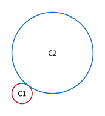
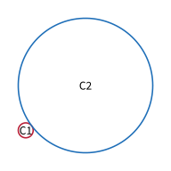
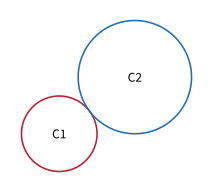

別冊練習問題 8 の解答 2円が接する条件（半径の決定）
(1) 円 \(C_1:\ (x-1)^2+(y-2)^2=4\) と、中心が \((7,10)\) で半径が \(r\) の円 \(C_2\) が接するとき、\(C_2\) の半径 \(r\) の値をすべて求めよ（\(C_2\) が \(C_1\) の外側で接する場合と、\(C_1\) を内側に含んで接する場合）。
中心間の距離
\[C_1C_2=\sqrt{6^2+8^2}=10\]
外接
外接：中心間の距離 \(=r_1+r_2\)。
\[10=2+r\ \Rightarrow\ r=8\]
内接
内接：中心間の距離 \(=|r_1-r_2|\)。大きい円の内側で接するので
\[10=r-2\ \Rightarrow\ r=12\]【答案】
\[r=8,\ 12\]答
(2) 円 \(C_1:\ (x)^2+(y)^2=1\) と、中心が \((8,6)\) で半径が \(r\) の円 \(C_2\) が接するとき、\(C_2\) の半径 \(r\) の値をすべて求めよ（\(C_2\) が \(C_1\) の外側で接する場合と、\(C_1\) を内側に含んで接する場合）。
中心間の距離
\[C_1C_2=\sqrt{8^2+6^2}=10\]
外接
外接：中心間の距離 \(=r_1+r_2\)。
\[10=1+r\ \Rightarrow\ r=9\]
内接
内接：中心間の距離 \(=|r_1-r_2|\)。大きい円の内側で接するので
\[10=r-1\ \Rightarrow\ r=11\]【答案】
\[r=9,\ 11\]答
(3) 円 \(C_1:\ (x+1)^2+(y-3)^2=4\) と、中心が \((3,6)\) で半径が \(r\) の円 \(C_2\) が接するとき、\(C_2\) の半径 \(r\) の値をすべて求めよ（\(C_2\) が \(C_1\) の外側で接する場合と、\(C_1\) を内側に含んで接する場合）。
中心間の距離
\[C_1C_2=\sqrt{4^2+3^2}=5\]
外接
外接：中心間の距離 \(=r_1+r_2\)。
\[5=2+r\ \Rightarrow\ r=3\]
内接
内接：中心間の距離 \(=|r_1-r_2|\)。大きい円の内側で接するので
\[5=r-2\ \Rightarrow\ r=7\]【答案】
\[r=3,\ 7\]答